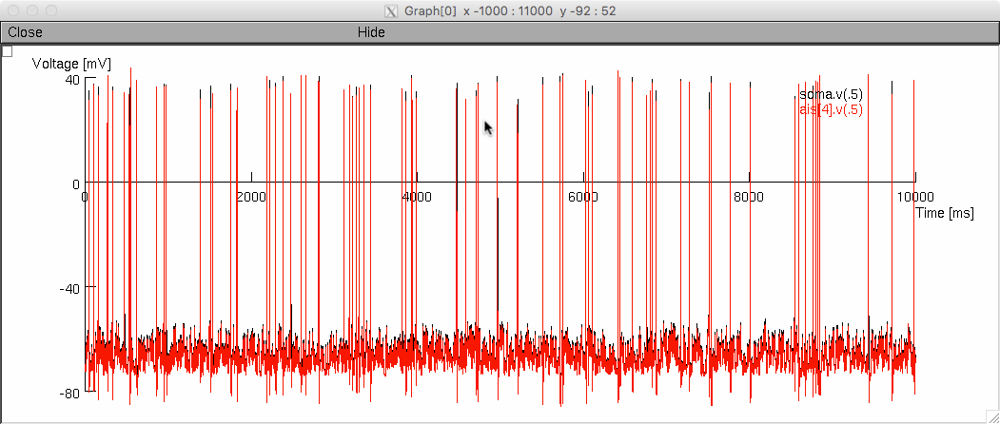

This directory contains source code used in Fig. 1 of the publication
Michalikova M, Remme MWH, Kempter R (2016):
Spikelets in Pyramidal Neurons: Action Potentials Initiated in the Axon
Initial Segment that do not Activate the Soma, PLOS Comp Biol
This model has been adapted from Hu et al.(2009): "Distinct Contributions
of Na(V)1.6 and Na(V)1.2 in Action Potential Initiation and Backpropagation"
and simulates a layer V pyramidal neuron stimulated with fluctuating synaptic
input that generates somatic APs and spikelets.
To run this model, either auto-launch from ModelDB or first compile
the .mod files (e.g. with "nrnivmodl"), then run the script
"Spikelets_Main.hoc" in GUI ("nrngui Spikelets_Main.hoc"). Press
"Init & Run" to start the simulation. After about 12 minutes (on a
2012 MacBook pro) you should see a graph like:

The graph shows voltage traces at the soma (black) and at the AIS
(red). At the soma, APs and spikelets are generated. Somatic spikelets
correspond to APs at the AIS.